Nintendo Adventure Book # 7: Dinosaur Dilemma

Intro: This Super Mario World inspired book is written by Clyde Bosco. Mario must save his friends and the Dinosaur Land natives from a devious Bowser scheme. This guide is adapted from a hand written draft completed 4/23/19. Look at the portal to learn how this works. Why is that book up there in a kitchen anyway? You'll see. Alright, let's go!
The guide was created by Amia J. Moore/ C. Mechayoshi. It may not be copied without permission. Images/scans mine.
Notice: use side nav to jump around super quick. It is not meant to represent every page in the book. Click for bigger images.
Stats:
- Chapters: sixty-one
- Items: basket of apples, scissors, magic feather, starman
- Endings: eleven
- Max score: infinite
- Errors: Maybe page 109's puzzle.
START Page 1 Chapter 1: The Mario bros are on vacation at Dinosaur Land but its not a quiet peaceful destination in the slightest. While resting around or trying to, someone is spying on them from a near by tree. Use the puzzle to see who and move to page eighty seven.
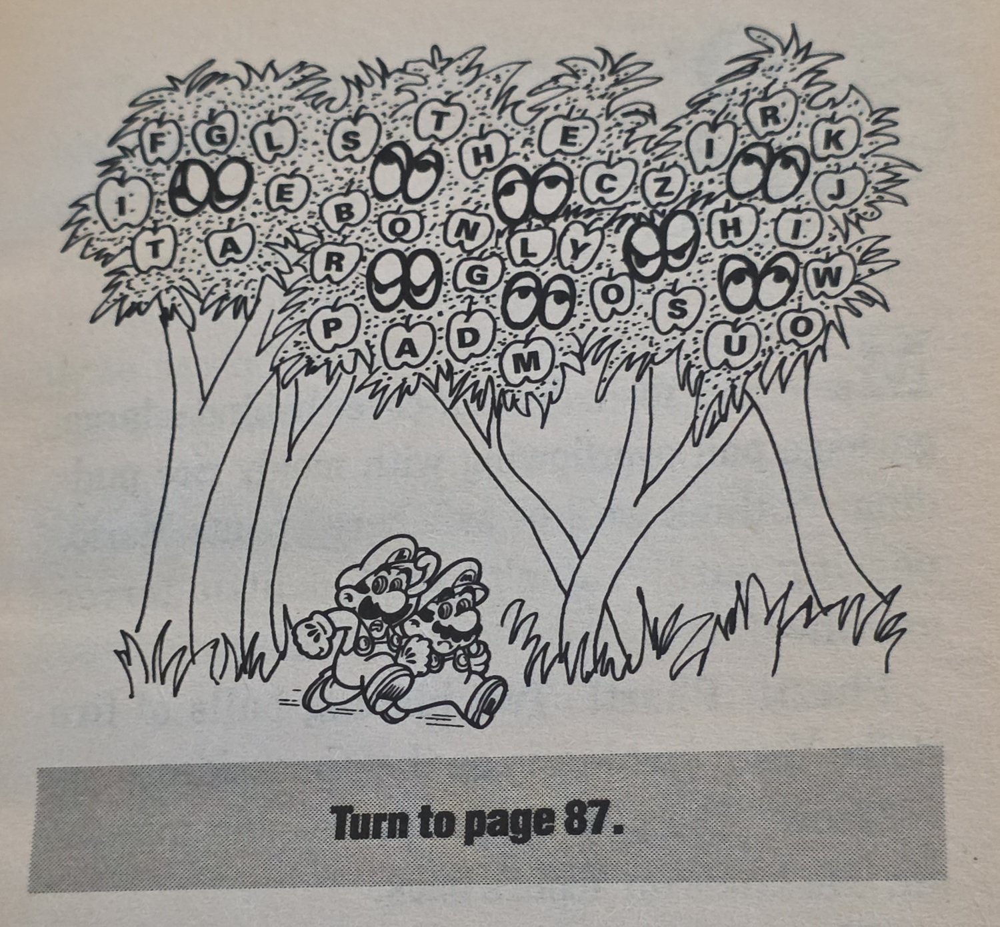
Splits: page 87
Puzzle Solution: You circle the letters that the eyeballs in the tree are looking. Some pairs are wonky, making figuring out the message’s structure trickier than they probably meant. It says ‘Its their pal yoshi’.
Page 4 Chapter 2: Mario and Yoshi hide behind a trash can but get fired up anyway. Literally. A hole burnt in Mario’s pockets costs you.
Buffet: lose ALL objects
Splits page 52
Path: from page 27
Puzzle solution: This is pretty serious but the loop back on fifty-two does allow you to get back on path to gain anything lost again. Basically this wastes time. Refer to fifty-two’s entry.
Page 6 Chapter 3: Mario tries rafting but is pulled into racing waters. Later he wakes up in an unfamiliar home with no idea how he got there.
Splits: page 8
Path: from page 98
Page 8 Chapter 4: Mario goes downstairs to the basement, getting scares along the way.
Splits: page 21
Path: page 6, page 68
Page 9 Chapter 5: Mario and Yoshi are in the desert (or back in the desert depending on how you get here). They get harassed as usual by something, this time Pokeys. Now use the puzzle to figure out where to go.
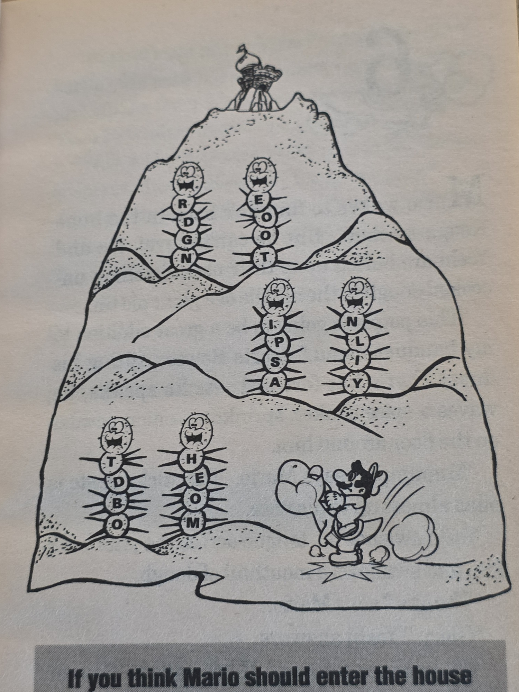
Splits: Page 39 (enter house on hill), page 64 (head back for Yoshi)
Path: from page 93
Puzzle solution: Mark out segments that match total # of spikes. You get 'go inside'. Go to page thirty-nine to enter the mansion and get an item. The other path is a loop around.
Page 12 Chapter 6: Mario wakes up in the kitchen, stuck in a giant pie tin. He learns of Bowser’s plans involving Dinosaur Land’s population in eggs and whatnot. Move on to forty-three.
Splits: page 43
Path: from page 19, page 30, page 26
Puzzle solution: The home stretch. Role call for necessary item checks: got the scissors, feather, and starman?
Page 14 Chapter 7: ‘Emergency slop’ happens and Mario is covered in nasty stuff. Bowser gets to Yoshi and it’s all over.
Game over
Path: from page 89
Page 16 Chapter 8: The machine spits out one more large green egg. Should Mario open it now or wait?
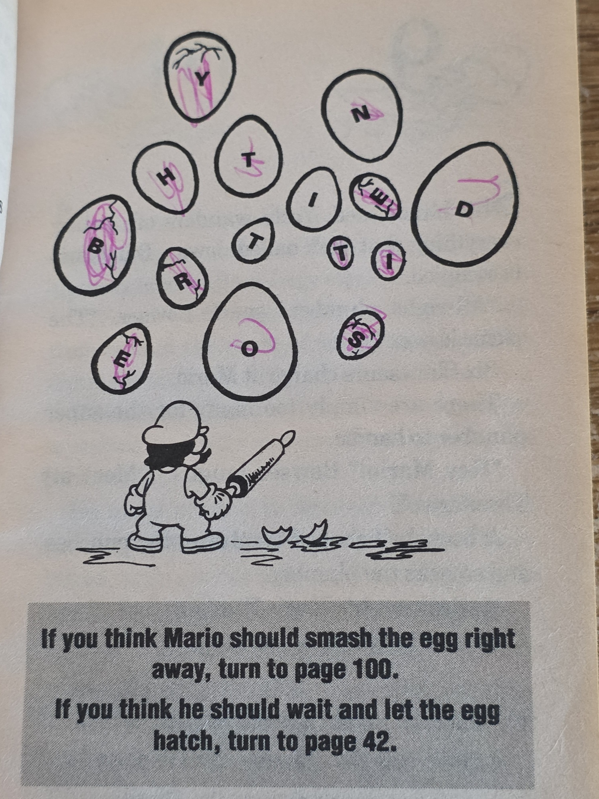
Split: page 100 (smash the egg now), page 42 (let it hatch)
Path: from page 56
Puzzle solution: It says something like ‘don’t hit it’ so head to forty-two.
Page 18 Chapter 9: Mario’s plan worked but now he has six Slimosaurs heading his way and must escape again.
Buffet: lose feather
Split: page 24 (use starman), page 78 (no starman)
Path: from page 101
Puzzle solution: Use the starman from the mansion that was on page twenty-four. Don’t be alarmed by the loss of the feather. It’s unavoidable and will not be needed again anyway.
Page 19 Chapter 10: Mario and Yoshi hide in the kitchen where they get randomly mugged by Larry Koopa and dumped into batter. Keep moving to page twelve.
Buffet: Lose ten coins
Split: page 12
Path: from page 103
Puzzle solution: Just keep moving for now.
Page 21 Chapter 11: Mario lands on the ground safely. He avoids hazards before having a run in with Mega Monty Moles. Use the puzzle to get an escape path.
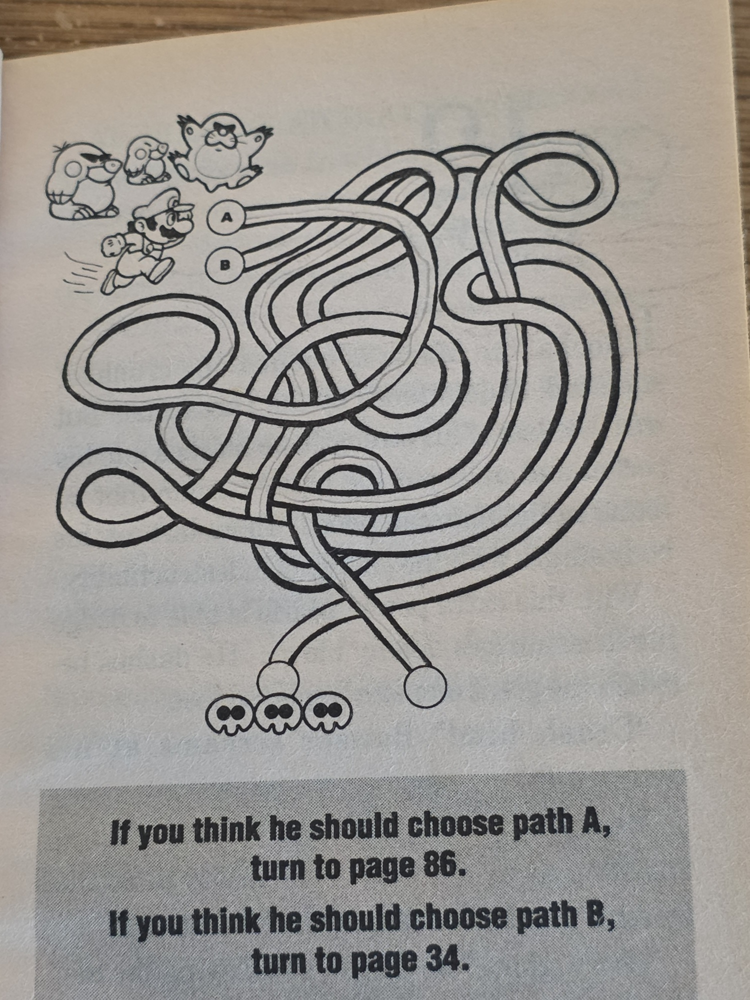
Splits: page 86 (path A), page 34 (path B)
Path: from page 8, page 71
Puzzle Solution: Choose path A and head to page eighty-six. Path B will not end well. Since the rules do not state you cannot turn back, you should always hit the right one.
Page 24 Chapter 12: Mario uses the star and antics ensue involving Yoshi and a falling spice rack, etc.
Split: page 56
Path: from page 18
Page 26 Chapter 13: Mario and Yoshi escape for Bowser to catch up and knock em out!
Splits: page 12
Path: from page 107
Page 27 Chapter 14: In the Valley of Koopas they encounter Dino Rhinos spitting fire. Use the puzzle to know where to hide, the rocks or garbage?
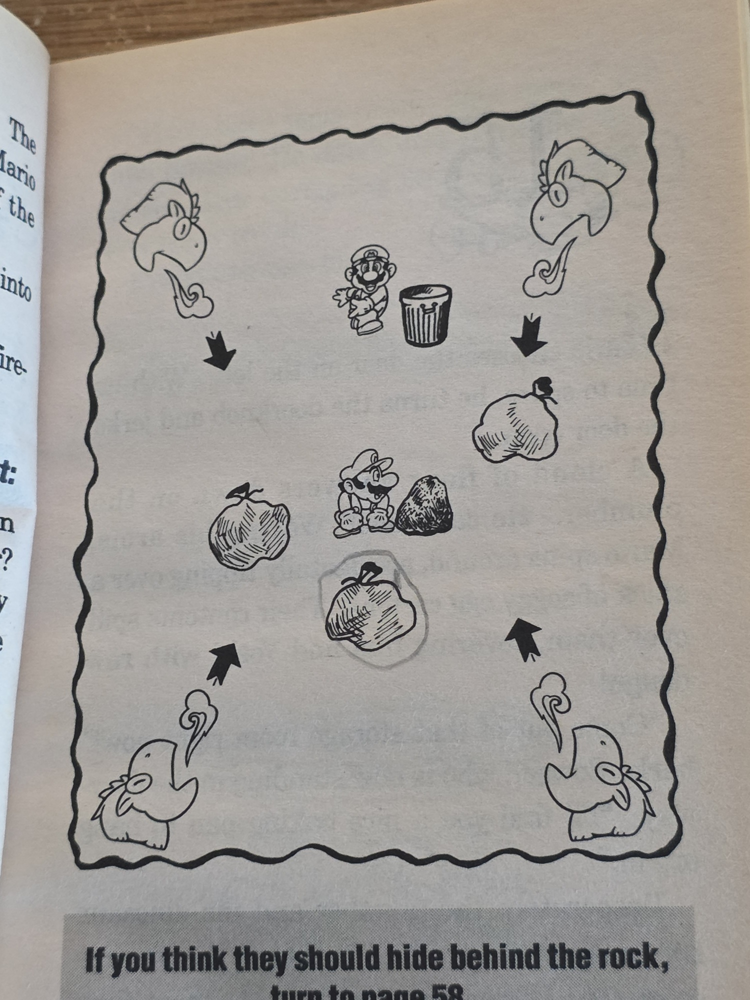
Splits: page 58 (hid behind the rock), page 4 (hide behind the garbage)
Path: from page 27
Puzzle solution: Hide behind the rocks on page fifty-eight or you will hit a LARGE hazard that can cost depending on where you are in the book.
Page 30 Chapter 15: Mario goes to the left for a messy situation with Bowser still behind him. In the storage room Bowser catches up once they get stuck.
Splits: page 12
Path: from page 94
Page 32 Chapter 16: From a high vantage point Mario can see the lake, desert, and Valley of Koopas. Pick carefully.
Splits: Page 81 (head towards lake), page 45, (head to desert), page 27 (head to Valley of Koopas)
Path: from page 79
Puzzle solution: What items do you have? Have the endgame in mind here. If you have the feather and the starman head to the Valley on twenty-seven for the last stretch. If you lack the starman, go to the desert on forty-five or you will be locked into a dead end. The lake will take you to the variable maze puzzle, a spot where the apple basket will kill you, and soon Bowser's fortress, which overlaps the Valley of Koopa's route.
Page 33 Chapter 17: Mario gets knocked out and by the time he’s awake Bowser has already taken over.
Game over
Path: from page 45, page 52, page 109
Path 34 Chapter 18: Mario while escape falls through a hole in the floor, landing in an oil pool. He’s not alone..
Game over
Path: from page 21
Page 35 Chapter 19: Luigi looks for food and heads to the jungle. Meanwhile Mario reads a headline in the paper about Bowser winning the ‘Snowbell’ prize by means of scientific theory you’ll soon learn. Later it becomes quiet enough for him to sleep- too quiet! He and Yoshi finally investigate three possible paths.
Splits: Page 45 (head for desert), page 81 (head for lake), page 52 (head for jungle)
Path: from page 87
Puzzle solution: If following the optimal route (see far bottom) you will want to head to the jungle for now, but if exploring naturally all lead to new paths and puzzles to solve.
Page 39 Chapter 20: Mario explores the mansion and must choose between up and downstairs. Use the puzzle.
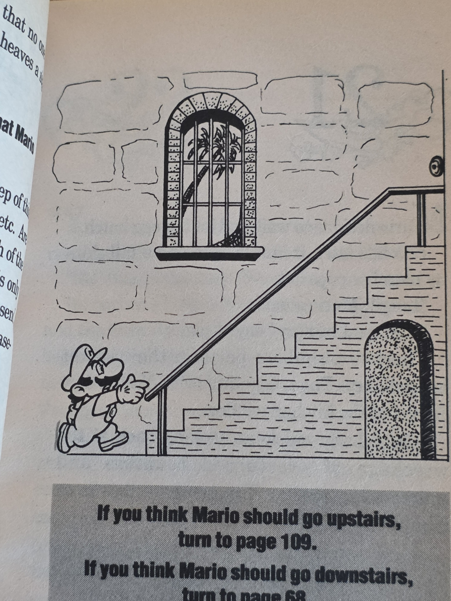
Splits: page 109 (go upstairs), page 68 (go downstairs)
Paths: from page 9
Puzzle solution: The correct path should be upstairs using the puzzle involving judging the size of steps to others. Both paths are ‘safe’ but page one-hundred nine is the only way to get a needed item.
WIN Page 42 Chapter 21: Seconds later from what would presumably be the bad ending, the egg hatches on its own and Luigi is okay. He, Mario, and Yoshi get out of the madhouse from the kitchen window.
Game Over
Path: from page 16
Page 43 Chapter 22: Bowser’s ‘genus’ idea is revealed! He will make a dinosaur omelet casserole thing to feed to his guests as he wins the Snowbell award. With that new privilege he will have access to the museum where he can harass the princess. O-kay... But Yoshi meanwhile has been eating everything, allowing Mario an escape.
Split: page 89
Path: from page 12
Page 45 Chapter 23: Mario and Yoshi tackle the desert. They are attacked by spike tops. Use the puzzle to get away.
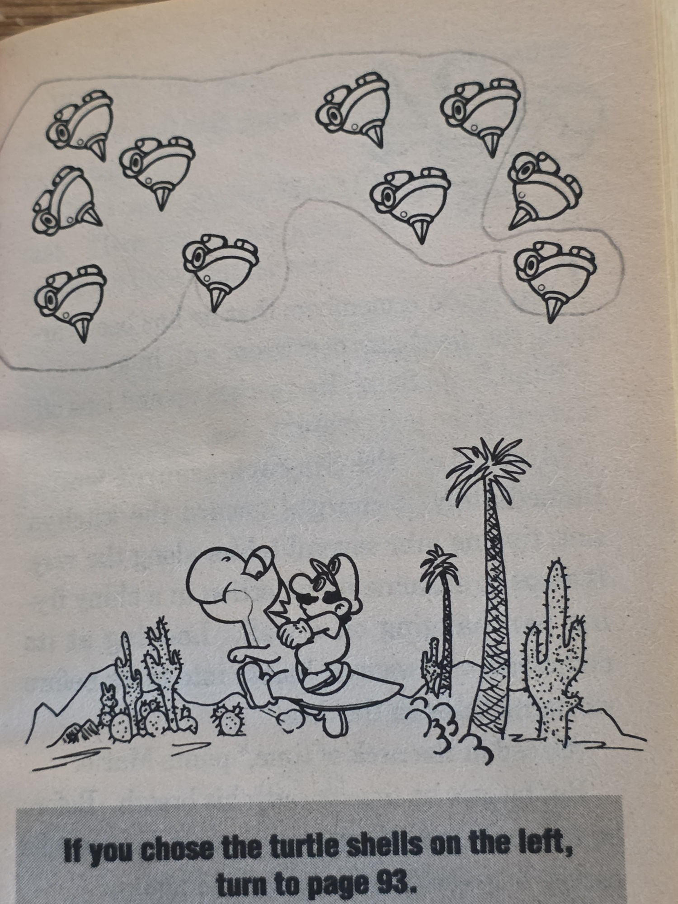
Splits: page 93 (left shells), page 33 (right shells)
Path: from page 35, 32
Puzzle solution: There are two clusters but only one will hit. By looking carefully the left cluster will hit. This is tricky without a straight edge. Either way head to ninety-three.
Page 48 Chapter 24: Snip snip snip and the monster is too self conscious to be an issue anymore. Before a breather there is yet another ‘Slimosaur’ attacking.
Split: page 101 (used magic feather), 65 (no magic feather)
Path: from page 119
Puzzle solution: Go to one-hundred one if you have the feather, so you can make progress but sixty-five otherwise.
Page 50 Chapter 25: The monster gets Mario.
Game over
Path: from page 119
Page 51 Chapter 26: Mario reaches and exit and is eventually at Lake Trilobite.
Splits: page 98
Paths: from page 86, page 114
Page 52 Chapter 27: In the jungle they stumble upon a Koopa football game. Solve the puzzle to know where to go.
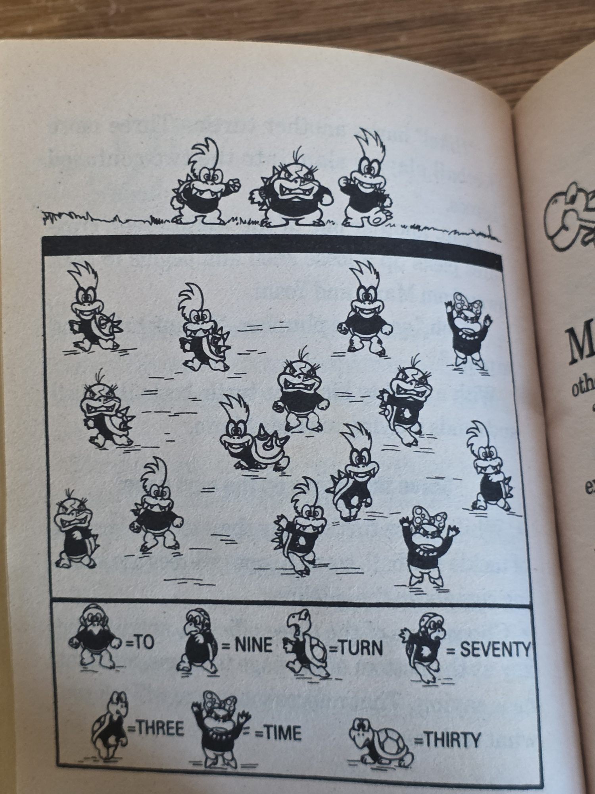
Splits: page 79, page 33
Path: from page 35, page 4, page 65
Puzzle solution: While a lot to take in at first glance it’s actually simple. Look at the key to see what the body language of the Koopas on field mean. Pick a Koopaling referee at the top, Larry, Morton, or Iggy and see what their players on field are saying. To save trouble, the options will be page thirty-three for Iggy’s players and page seventy-nine for Larry and Morton. Head to seventy-nine for the feather. Thirty-three will kill you, yes despite nothing warning that.
Page 55 Chapter 28: Mario catches up with Yoshi and some other dinos but they look hungry…
Splits: page 106 (has basket of apples), page 116 (no basket of apples)
Path: From page 93
Puzzle solution: If you have the apples you HAVE to take the one-hundred six path, dooming you. Yeah, it sucks. If you didn’t however, move on.
Page 56 Chapter 29: Bowser’s guests don’t appreciate the antics and leave. Mario collects a reward, but it’s not over yet.
Reward: two-hundred coins
Split: page 16
Path: from page 24
Page 58 Chapter 30: Mario and Yoshi get away and then reach Bowser’s Fortress just in time for Bowser’s guests to arrive in celebration of his fake award. Wart even shows up. Anyway, decipher the license plate puzzle.
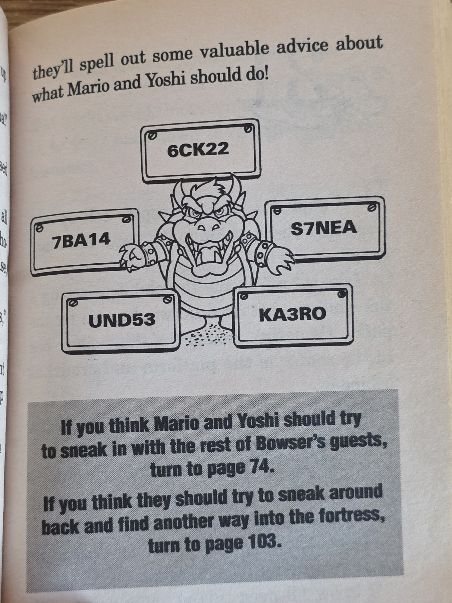
Splits: page 74 (sneak in with the guests), 103 (sneak another way)
Path: from page 27
Puzzle solution: Remove the numbers from the plates as stated and you’ll get an easy to see message. 'Sneak around back' on page one-hundred three.
Page 62 Chapter 31: Mario escapes the bats and finds a box with an item. Finally head downstairs.
Reward: ten coins, Starman item
Splits: page 68
Path: from page 109
Page 64 Chapter 32: Mario looks for Yoshi with no success and he finds he’s alone on the island (or rediscovers that depending on the path here you took). Go on to page ninety-eight.
Splits: page 98
Path: from page 9
Page 65 Chapter 33: Mario gets knocked out and wakes up on a grassy hill with Yoshi. His memory is foggy but they move on to crossroads. Use the puzzle.
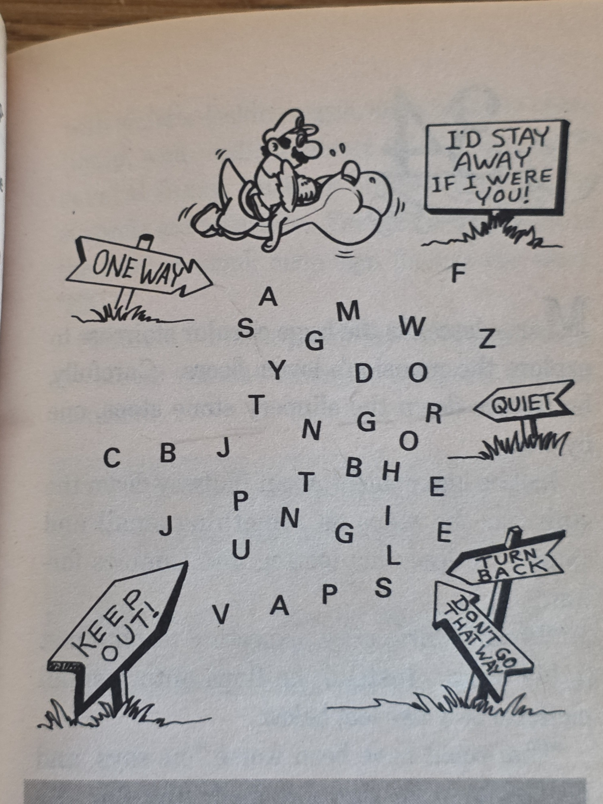
Buffet: all coins lost
Splits: page 52 (go to jungle), page 97 (go to lava pits)
Puzzle solution: Draw lines across the field where the arrows point and the remaining letters are the clue. It directs you to the jungle so go to fifty-two. You will not get a high score on this path but fifty-two is a good point to be and gives the needed item aside from the fact that you’ll have to go through the linear path all over again.
Page 68 Chapter 34: Mario goes downstairs either first or as a second option depending on how you navigated to this page. The room is FULL of monsters. Hopefully you have an item to help.
Reward: five coins
Splits: page 71 (use magic feather), page 8 (no magic feather)
Path: from page 39, page 62
Puzzle solution: Use the feather on seventy-one to progress but if you have no choice go to page eight. From here, it might help to compare where you are to the ‘optimal route’ at the bottom of this guide. Otherwise it may get easy to get lost all over again.
Page 70 Chapter 35: A ‘You can’t get this score!’ page if you looked at eighty-three's puzzle and somehow screwed it up. Return there.
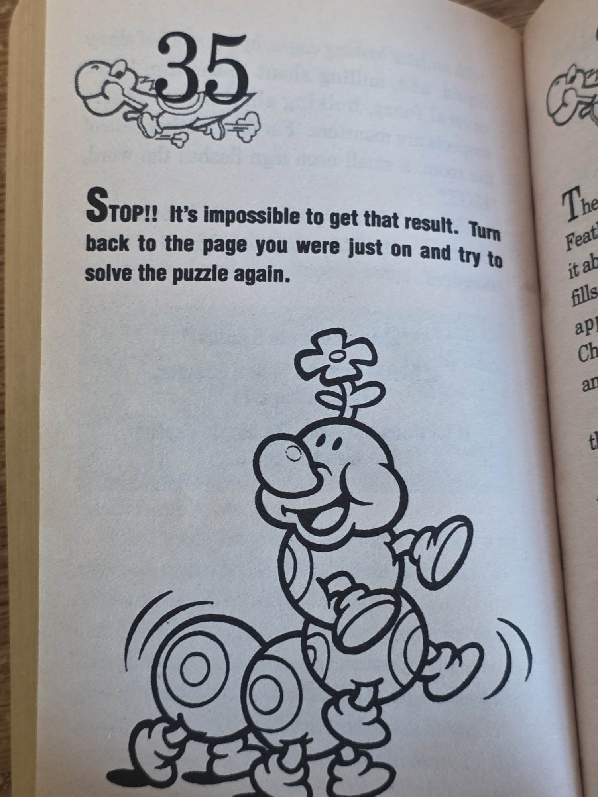
Page 71 Chapter 36: Mario takes to the sky with the cape and he collects so many coins he becomes weighed down. Use the puzzle to see if he can make it.
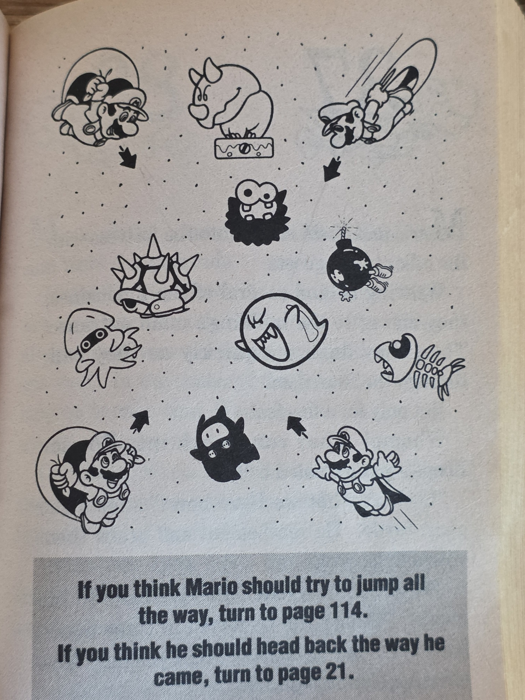
Splits: page 114 (jump all the way), page 21 (head back)
Path: from page 68
Puzzle solution: Trace a clean path between two different Marios for the puzzle. You can't do it cleanly. Page one-hundred fourteen will penalize you accordingly, but also dump a reward too. I don't think it's an error, just a gambit they want you to take. See optimal path notes, but that's an issue. Go to twenty-one instead and work your way from there.
Page 74 Chapter 37: Mario and Yoshi try sneaking in and fail.
Game over
Path: from page 58
Page 75 Chapter 38: Mario and Yoshi sneak into the next room with sleeping hammer bros. They wake up of course. Use the puzzle to move on.
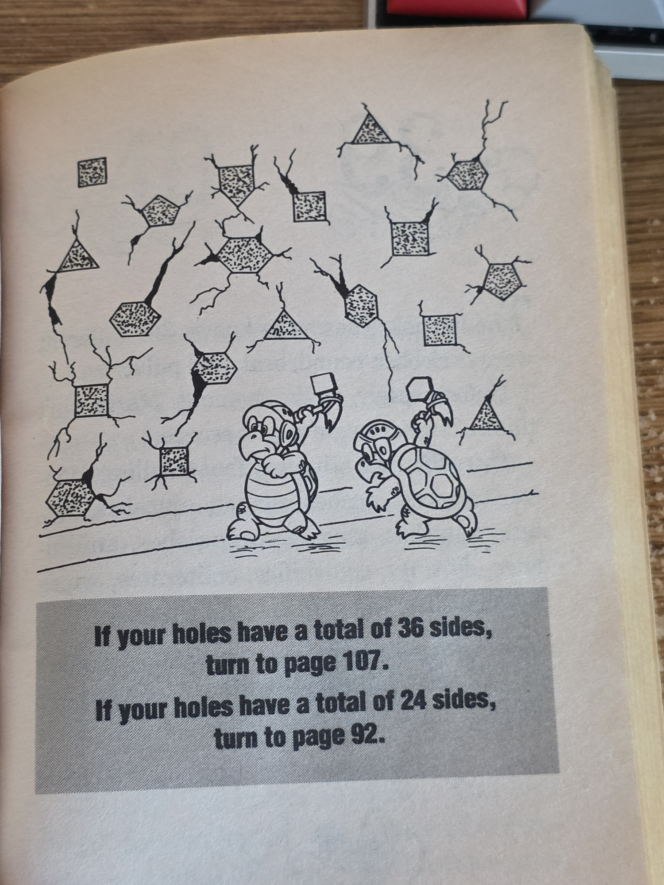
Splits: page 107 (thirty-six sides), page 92 (twenty-four sides)
Path: from page 94
Puzzle solution: Compare the hammers to the dents in the walls. The answer is thirty-six sides so head to page one-hundred seven.
Page 78 Chapter 39: The attacking ‘Thesaurus’ trounces, crushes, stomps, etc, Mario.
Game over
Path: from page 18
Page 79 Chapter 40: Mario beats the football players at their own game then finds a useful item in a fallen athlete’s pockets, a feather.
Reward: Magic feather, five coins
Splits: page 32
Path: from page 52
Puzzle solution: Enjoy this needed item and move on to a new branch, or old one if you have looped.
Page 81 Chapter 41: Mario and Yoshi reach Lake Trilobite where he loses Yoshi quickly and must trudge along. Go to page ninety-eight.
Splits: page 98
Path: from page 35, page 32
Page 83 Chapter 42: Mario dives in and collects some coins. Use the puzzle to determine how many.
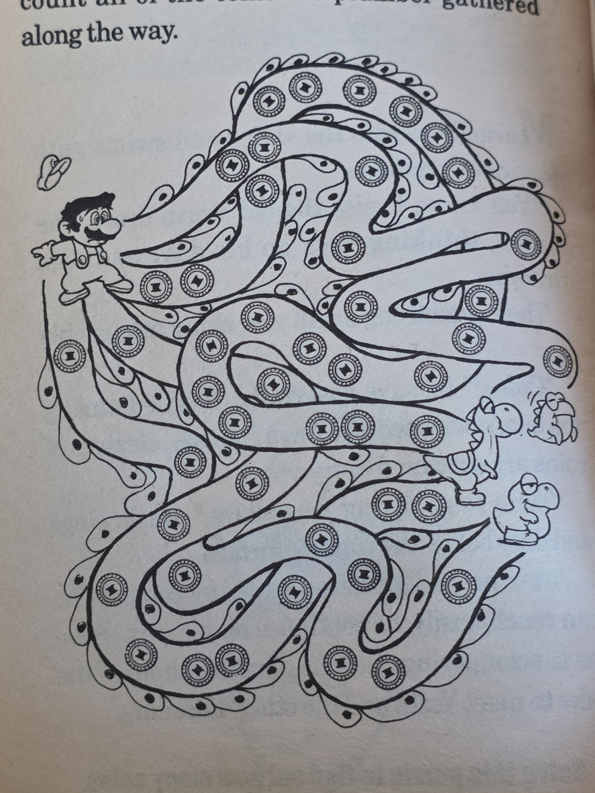
Reward: five ≤ twenty coins
Splits: page 70 (fewer than five coins OR more than twenty), page 55 (five to eleven coins OR twelve to twenty coins)
Path: from 112, page 98
Puzzle solution: You will not have fewer than five or greater than twenty lest you face a dead end albeit of a non-dangerous kind.
Page 86 Chapter 43: Mario escapes the moles and picks up coins. You go to fifty-one.
Reward: five coins
Splits: page 51
Path: from page 21
Page 87 Chapter 44: Yoshi introduces himself. You get exposition that this story takes place right after the events of Super Mario World. Yoshi eats up the reserve food so which brother will now look for more? This is the first split.
Splits: page 35 (Luigi looks for food), page 112 (Mario looks for food)
Path: form page 1
Puzzle solution: Have Luigi look for food which is page thirty-five. If you let Mario do so you will get trapped very early.
Page 89 Chapter 45: Mario makes a break for the omelet machine’s controls. There are two levers but no readable labels. Use the puzzle to know which to pull.
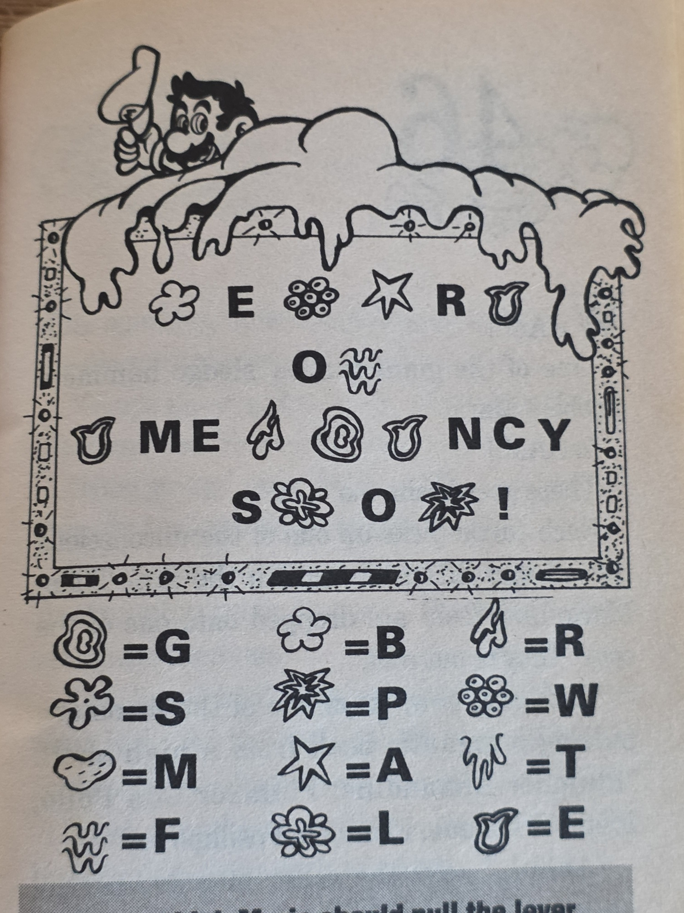
Splits: page 14 (pull left level), page 96 (pull right lever)
Path: from page 43
Puzzle solution: Simple deciphering puzzle that says ‘Beware emergency SLOP’, so go to ninety-six. The only danger is trying to guess at it.
Page 92 Chapter 46: Mario and Yoshi get whacked for a bad end.
Game over
Path: from page 75
Page 93 Chapter 47: Yoshi snacks on Spike Tops safely and Mario finds coins. They find a mansion ahead.
Reward: five coins
Splits: page 9
Path: from page 45
Page 94 Chapter 48: Mario and Yoshi dash out of the kitchen but not before attracting trouble.
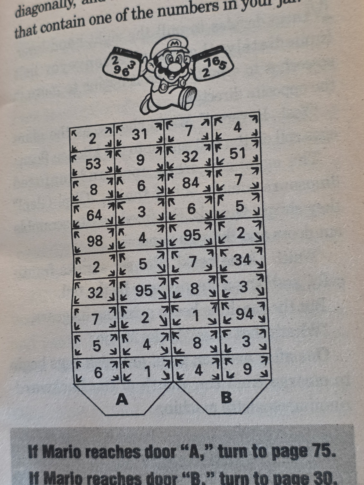
Splits: page 75 (door A), page 30 (door B)
Path: from page 103
Puzzle solution: For the puzzle you choose a number bank to navigate to the bottom. You MUST reach door A on page seventy-five to reach the Hammer Bros.
Page 96 Chapter 49: Mario makes the conveyor go in reverse so the eggs roll off and dinosaurs are free. One egg is noticeably green..
Split: page 119
Path: from page 89
Page 97 Chapter 50: Mario and Yoshi reach various pits, falling victim eventually.
Game over
Path: from page 65
Page 98 Chapter 51: Mario walks around the shore to spot dinosaurs on the other side. He can use a raft to get across or swim. Use the puzzle for advice.
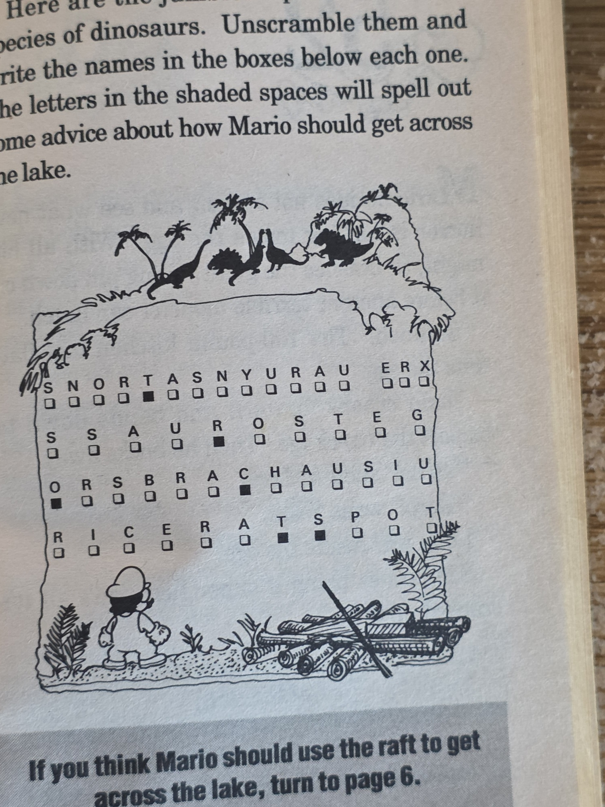
Splits: page 6 (use raft to get across), page 83 (swim across instead)
Path: from page 81, 64, 51
Puzzle solution: Unscramble the dinosaur names and then use the indicated letters to know what to do.. in theory. You have Tyrannosaur Rex, Stegosaurus, Brachiosaurus, and Triceratops, leading to ‘no boat’. I didn't get it until revamping the guide, but they're saying to swim on page eighty-three. Six will lead you around for a bit, add a few coins, and bring you back eventually. Since it's superfluous either way, it remains 'just a hint'.
Page 100 Chapter 52: Mario cracks open the egg and Luigi’s (dead or implied enough) body is inside!
Game over
Path: from page 16
Page 101 Chapter 53: Mario uses the feather to leap high then blind folds Yoshi with the cape for a clever plan.
Splits: page 18
Path: from page 48
Page 103 Chapter 54: Mario and Yoshi sneak around the fortress, soon spying on a mad kitchen scene. Next they must hide when footsteps are heard. Use the puzzle for a hint.
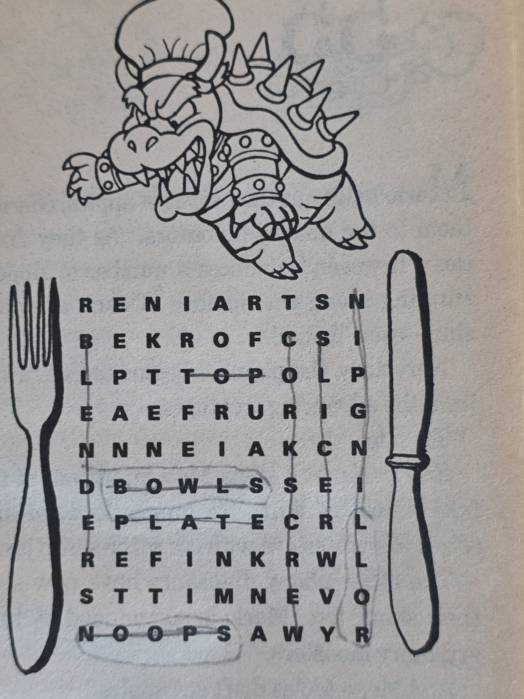
Splits: page 19 (hide in the kitchen), page 94 (get out, and fast)
Path: from page 58
Puzzle solution: Here's the fifteen words: mitts, spoon, knife, plate, bowls, pot, fork, strainer, rolling pin, slicers, corkscrew, peeler, sifter, pan, and blender. You'll get 'run away'. Page nineteen will ruin you! Go to ninety-four to leave the scene.
Page 106 Chapter 55: Mario tries to feed the dinos but they are imposers!
Game over
Path: from page 55
Page 107 Chapter 56: Mario dodges hammers and the floor gives in. Escaping the disaster Mario snags a pair of scissors and money.
Reward: ten coins, scissors
Splits: page 26
Path: from page 75
Page 109 Chapter 57: Mario goes upstairs where Swooper enemies attack. Use the puzzle to see if his safety net trick will work.
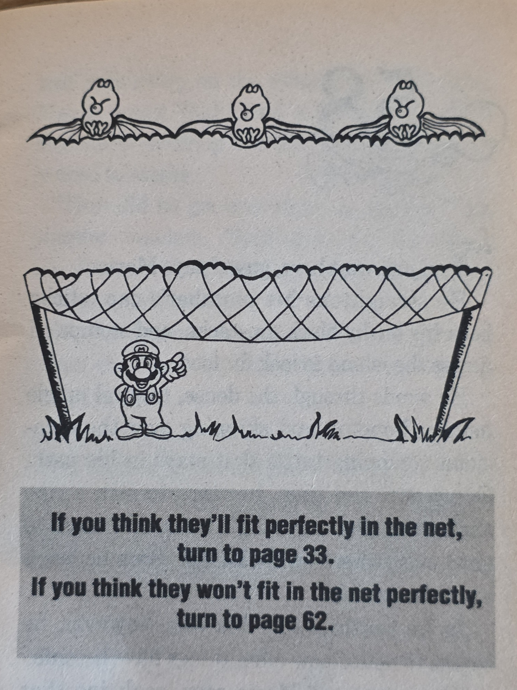
Splits: page 33 (it fits in the net), page 62 (it won’t fit ‘perfectly’)
Path: from page 39
Puzzle solution: The Swoopers must fit perfectly in the net by lining it up. It’s iffy, because it really appears like it does, but the results speak otherwise. Head to sixty-two.
Page 112 Chapter 58: Mario looks for food and finds enough apples for a basket. He notices how quiet the island becomes before spotting Yoshi on the other side of Lake Trilobite. You move on.
Reward: Basket of apples
Split: page 83
Path: from page 87
Puzzle solution: Narrative wise, notice that the time frame is different than if you took the page thirty-five route. Also, if on this path coming from the start you are already doomed..
Page 114 Chapter 59: Mario takes the risk and it pays off, sort of.
Reward: three-hundred coins
Buffet: lose Magic feather
Splits: page 51
Path: from page 71
Puzzle solution: Well.. you kind of needed that feather. Just move on from here.
Page 116 Chapter 60: Mario and the dinosaurs search for food when Mario spots a hammer bro who has captured dinosaurs. They get away. Mario and Yoshi reach the Valley of the Koopas. You go to twenty-seven next.
Splits: page 27
Path: from page 55
Page 119 Chapter 61: Creatively evil creatures hatch and attack. A ‘Tie-rack-asaurus Necks’ in particular may have an exploitable weakness.
Splits: page 48 (use scissors), page 50 (no scissors)
Path: from page 96
Puzzle solution: Use your scissors and go to forty-eight.
Summary and conclusions:
This was the fourth Nintendo Adventure Book I'd read, and the one that made me snap. Or create walkthroughs. That too. Dinosaur Dilemma has a lot going on in the early to middle parts, with many distinct, if copy pasted from Super Mario World, locations to explore. It's also tough because there are THREE item checks during the final stretch, and only one leaves wiggle room.
Of course I think it's fine to be super gamebooky with the item checks and even the loop arounds, but I hate how linear it is at the end and how choices feel arbitrary even if you're solving puzzles to get so called hints. There's many hazard pages ready to strip you of item and coins. It might be salvageable, but a headache either way. The ‘item of doom’ is cruel but very early, so if you fall for it you’ll lose no real progress. Don't take the score too seriously, because if you want to score more than my optimal path gives you, you will be going in circles for ages.
Bowser’s Slimosaurs are slightly entertaining, though his evil plan is a bit dumb. Yoshi is not a talking companion for Mario and often goes missing, so don't expect banter. Overall this is a more complex Monster Mix-Up 2.0, better with scenery but poorer with the writing. Puzzles needed some fine tuning, with issues with the puzzle itself or the split options. Are my thoughts more favorable since the old guide? Not really, because while I'm not judging the maze aspect so harshly now, there's mechanical problems that make it difficult to complete regardless. 2/5. Check if out if you want a survival challenge stacked against you.
Optimal Path:
START 1 – 87 – 35 – 52 – 79 (feather) – 32 – 45 (desert, sort of) – 93 – 9 – 39- 109- 62 (starman) – 68 (five coins) – 71 – 21 – 86 – 51 – 98 – 83 (*twenty coins) – 55- 116- 27- 58- 103- 94- 75- 107 (ten coins, scissors) – 26- 12- 43- 89- 96- 119- 48- 101- 24- 56 (two hundred coins)- 16- 21 END.
Notes: Going for absolute speed and efficiency only nets us 2350 here. More on that in a moment. The feather comes from the football part and the starman the mansion part, but only if you go upstairs!! You also have to avoid losing your feather there too. If you have those items, target the Valley of Koopas and during the kitchen scene, and don’t hide in the kitchen or that locks you out of the scissors item.
So what about maxing that score? One thing that helps is taking the bait on page one-hundred fourteen from page seventy-one's puzzle. You lose the feather but get three-hundred coins. You're in for a loooong extra trip if you do this, but the feather is the one item you get allowance on, so knock yourself out.
Item Locations:
- Star: page 62
- Feather: page 79
- Scissors: page 107
- Apple basket: page 112
Puzzle analysis: Eighteen puzzles, disproportionately ‘get a ruler’ (six) and ‘decipher’ (six) with a few crossover puzzles. There are two ‘maze’ puzzles, two ‘word search’, three ‘logic’. One puzzle is math/logic, one puzzle ‘get a ruler’/decipher. Several okay ideas were brought down by unclear instructions. Otherwise the level of the puzzles are easy. Difficulty comes from trying to gain the items and avoid the hazards.
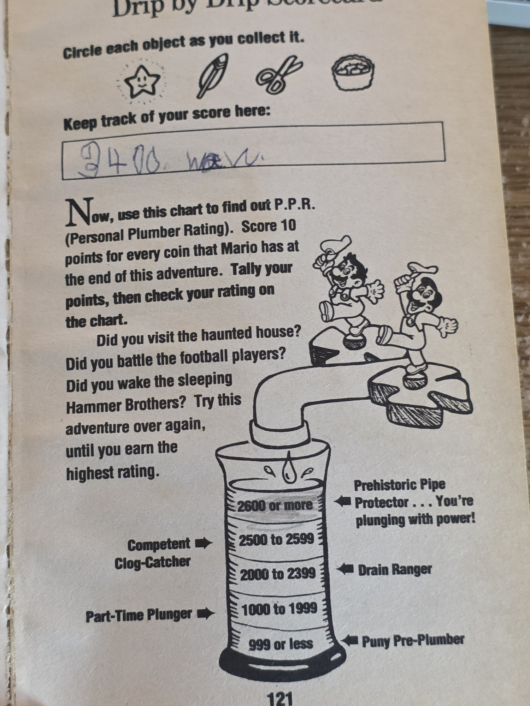
Book goals:
-Visit the haunted house: Needed to get the starman.
-Battle the football players?: On page fifty-two, this leads to the feather.
-Wake the sleeping Hammer Bros: on seventy-five this is needed to get the scissors, however you get here from page ninety-four's puzzle, which is about guessing!
That covers the items, good job, but not how to navigate to them, so beware.
Last edit: 2/20/20, 11/13/20, 11/18/21, edited 1/4/24
Redone: 11/11/26
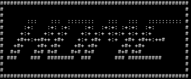